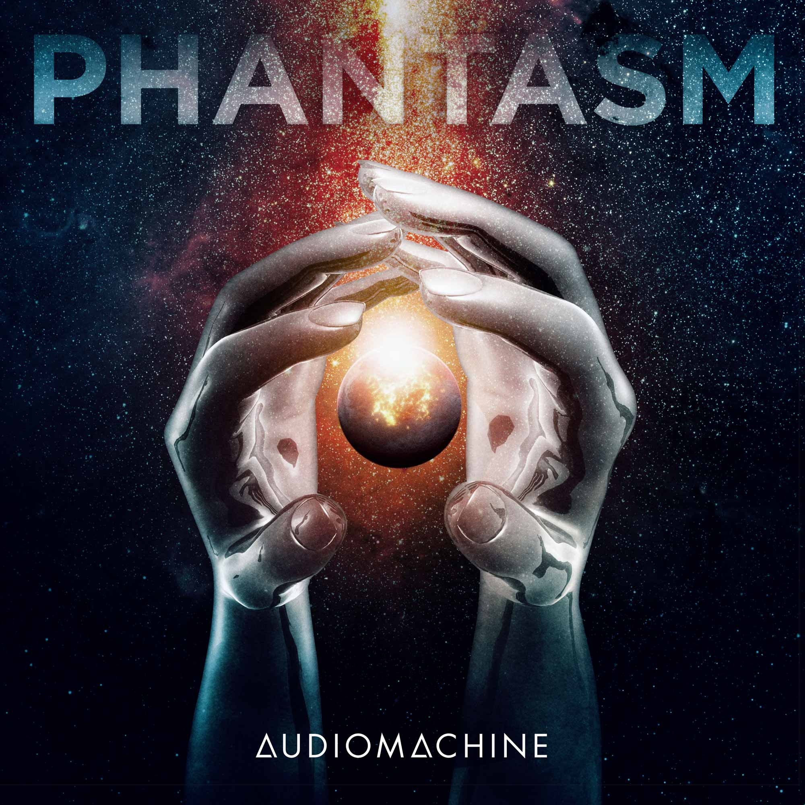
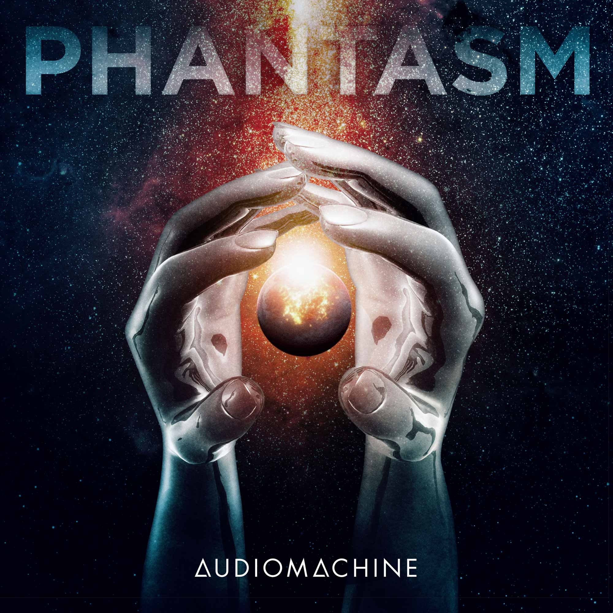
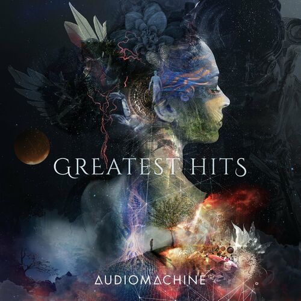
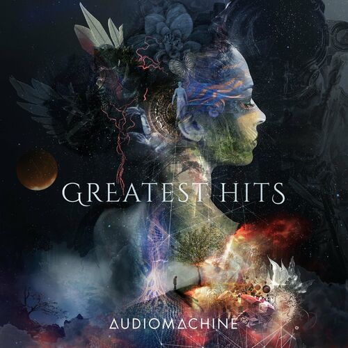

Discography

 

 

Composers
Kevin Rix
Kevin Rix started out playing guitar and was in various rock bands growing up. At music school, where he was introduced to classical music and jazz, he started realizing his interests in composing and in working with different instruments and sounds
Paul Dinletir
Paul Dinletir initially just played piano and wanted to be a songwriter and jazz pianist.
His wife was able to get him into a film and television music UCLA taught by Robert Etoll who became a collaborator
Trailers
